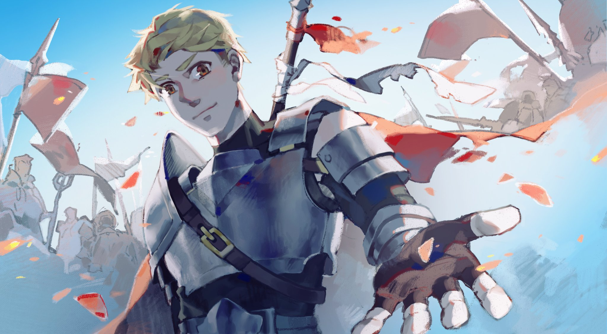

整理中 20250611-
自己寫東西的地方
布朗．傑拉爾
2025-06-13 記 「布朗．傑拉爾」是我為了歡迎一個團友 8note 開始玩 D&D 而設計的 NPC ，這是團後有一天他分享的圖。
我希望我自己能一直記得那個時候帶團的感覺。
我甚至已經不記得是哪一年了， 2018 到 2019 左右吧。試著搜尋了一下，獲得圖片是 2018-12-13 左右，帶團的時間應該是 10 月之前，因為 10 月 11 日有這樣的筆記：「有朋友要開團，我不知為何想拿一個之前隨意命名的 NPC 讓他去冒險。團充。即將成為最強槍兵傳說，騎士見習生布朗。但是得好好重捏一下角色卡，抄之前的玩家的（為了造成鏡面對決）卡太偷懶。」
回頭看，那時候其實也不過剛開始帶團，某方面來說蠻勇敢的；真的是什麼都不懂所以比較敢嘗試的時候，雖然現在也沒有真的懂比較多啦。
我後來有用這個角色去跑 Curse of Strahd 長團部分，也有用在其他團務中當作 NPC 並且有正邪的變體。算是有好好用到的角色吧。
想要重新整理一些對我有正面影響的、我自己覺得做的對的事情。